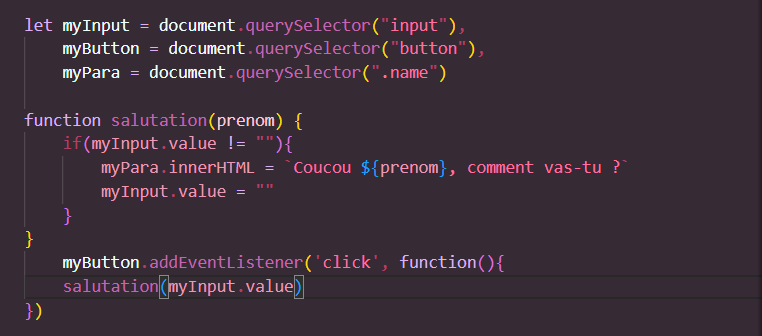
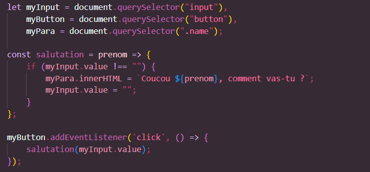

Les fonctions fléchées


🍓 Qu'est-ce que c'est ? (¬_¬")
⭐ Une fonction fléchée est une manière plus claire et courte à créer une fonction ( •̀ ω •́ )✧
🍓 Comment ça ? (+_+)?
⭐ Lorsque nous écrivions une fonction, c'était :
⭐ Alors que la fonction fléchée, c'est :
🍓Qu'est-ce qui change ? ( ͠° ͟ʖ ͡°)
⭐ Leurs syntaxes et la manière dont c'est écrit ! ʕ•ᴥ•ʔ
Les fonctions fléchées
🍓 Oui mais, qu'est-ce qui change réellement ? ＞︿＜
⭐ On ne la créée plus avec "function" mais avec "const". En ce qui concernce son paramètre, il sera suivi du symbole égal. S'il y a plusieurs paramètres, alors ils seront dans des parenthèses comme dans les fonctions traditionnelles (●'◡'●)
🍓 Attends, j'ai pas compris avec les paramètres ⊙﹏⊙∥
⭐ Le paramètre de la fonction est noté à la suite du symbole égal, et si la fonction a plusieurs paramètres, ils seront listés entre ces parenthèses O(∩_∩)O
🍓 Aah d'accord, mais pourquoi on l'appelle fonction fléchée ?
⭐ Car si on regarde bien, il y a la flèche =>, elle est utilisée pour définir la fonction et son action, qui est entouré par des accolades. Flèche, fléchée.. ヾ(≧▽≦*)o
🍓 Wouuaah, j'ai tout compris, merci beaucoup !
⭐ Mon travail s'achève là